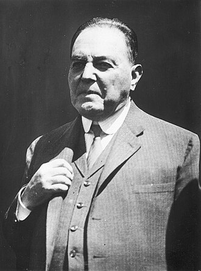

Yrigoyen asume la presidencia: por primera vez gobierna un elegido por el voto secreto del pueblo
El caudillo radical, consagrado en los comicios de abril bajo la nueva ley electoral, juró ante el Congreso. A la salida, la multitud desató los caballos de su carruaje y lo arrastró a pulso hasta la Casa Rosada.

Don Hipólito Yrigoyen juró hoy ante la Asamblea Legislativa como presidente de la Nación, y con su juramento cambió algo más hondo que un gobierno: por primera vez desde que la Argentina existe, el mando no viene del acuerdo de los notables ni del fraude consabido de los atrios, sino del voto secreto y obligatorio de los ciudadanos, conforme a la ley que el presidente Sáenz Peña arrancó a su propia clase en 1912. El régimen que gobernó el país durante décadas entregó el poder por la vía que él mismo, acaso sin medirlo del todo, dejó abierta.
La jornada tuvo su estampa inolvidable. Al salir del Congreso, la muchedumbre que colmaba las calles rompió el cordón, desató los caballos de la carroza presidencial y se puso ella misma a tirar del carruaje, llevando a su presidente en andas de hierro y madera hasta la Plaza de Mayo. El hombre así arrastrado en triunfo es la figura más extraña de nuestra política: un caudillo que no da discursos, que rehúye los retratos y las fiestas, que conspiró en silencio durante veinticinco años y al que sus fieles llaman el Peludo por lo difícil que es verlo salir de su cueva.
La ley que hizo posible este día se votó hace cuatro años contra el instinto de los mismos que la votaron: sufragio secreto, obligatorio y por padrón militar, para terminar con el espectáculo de las elecciones cantadas a punta de asado, boleta cambiada y libreta ajena. El radicalismo la esperó desde la intransigencia: tres revoluciones —la del 90, la del 93, la del 905— y un cuarto de siglo de abstención bajo el argumento de que no se compite en mesa de fulleros. En abril, la primera prueba limpia dio el resultado que el régimen descontaba imposible, y aun así la cosa se definió recién en el colegio electoral, donde unos electores disidentes de Santa Fe inclinaron la balanza tras semanas de vértigo. La transición entera se jugó dentro de la ley, y ésa es acaso la mayor noticia del día.
El personaje sigue fiel a su leyenda hasta en la jornada de su consagración: no hubo banquete ni baile, y la casa austera de la calle Brasil donde vive amaneció rodeada de curiosos que no lo vieron asomarse. Yrigoyen no pronunció discurso ante la Asamblea, como no lo pronunció jamás en su vida pública: gobierna, dicen los suyos, por conversaciones de a uno, en voz baja y a horas imposibles. Sus primeras definiciones son dos y marcan rumbo: sostener la más estricta neutralidad en la guerra europea, le cueste lo que le cueste al comercio, y lo que él llama la reparación: devolver la república a los que la miraron veinte años desde la vereda.
Gobernará con el Senado y la mayoría de las provincias en manos del viejo régimen, y con Europa incendiada por una guerra que parte aguas también aquí. Pero lo esencial quedó consumado hoy: los hijos del inmigrante y del criollo pobre, esa mitad del país que miraba la política desde la vereda, entró por la puerta grande y con su voto sentó a su hombre en el sillón de Rivadavia. Los que pronostican que la experiencia durará poco harían bien en recordar que las puertas que se abren así no se cierran sin escándalo.